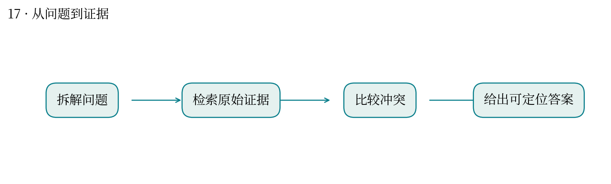
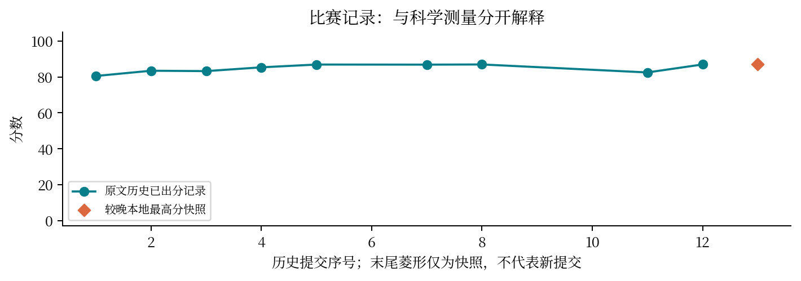

现实中想解决什么：跨领域查资料时，怎样让问题得到有来源、可复核的回答？
从计算到应用：问题拆解与来源检索 → 答案与证据 → 支持研究中的初步判断。
这次实际做到哪一步：本题检验跨学科作答与交付能力，总分是集合表现。
还缺什么：总分不能保证某个答案正确；重要结论仍需逐项核查原始来源。
跨学科问答的核心，是把每个结论接回证据。
最高分快照：86.95 · 2026-10-12T01:11:24+08:00
150 道科研问题要求检索、比较来源并给出可核查答案。真正困难的地方往往是定义、时间截点和相互冲突的证据。
完成全量作答并提交原生轨迹，保留来源定位及格式检查；历史正式分约 86.9457。
报告用提交迭代图展示已有记录；未逐条核验所有答案时，不把总分解释为 150 条结论都正确。
网页命中不等于原文支持；综述、原始研究与新闻的证据层级不同。引用必须支持实际写出的命题。
直接对应你做植物研究文献整理和教学题目验证：先拆清问题，再检查答案与材料是否匹配。
总分缺少逐题错误明细时，只能讨论可核验性流程，不能臆测评分器偏好的文风或关键词。


| attempt | 提交时间 | 分数 | 状态 |
|---|---|---|---|
| 51431 | 10-10 22:28:07 | 80.5298 | 已出分 |
| 51627 | 10-10 23:14:24 | 83.4555 | 已出分 |
| 51786 | 10-10 23:51:04 | 83.2412 | 已出分 |
| 52030 | 10-11 00:45:44 | 85.3493 | 已出分 |
| 52365 | 10-11 02:07:13 | 86.9015 | 已出分 |
| 52557 | 10-11 02:55:22 | — | 失败 |
| 52770 | 10-11 04:15:49 | 86.8497 | 已出分 |
| 52960 | 10-11 05:44:11 | 86.9457 | 已出分 |
| 53097 | 10-11 07:33:15 | — | 失败 |
| 53265 | 10-11 08:55:01 | — | 排队中 |
| 53561 | 10-11 10:36:17 | 82.5021 | 已出分 |
| 54624 | 10-11 16:12:44 | 86.952 | 已出分 |
源文件 SHA256 见 证据清单；用 scripts/build.py 重建图表。